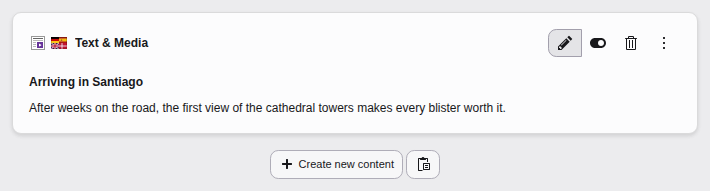
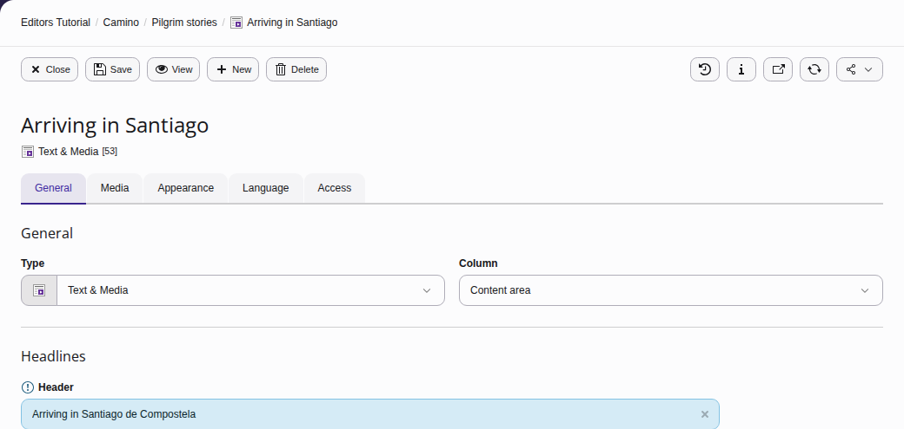
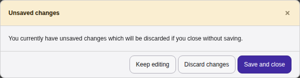
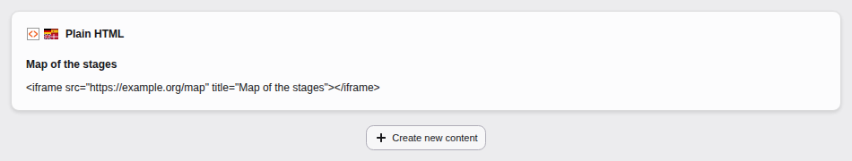
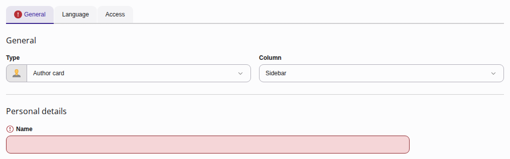
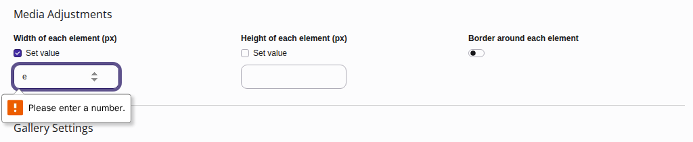
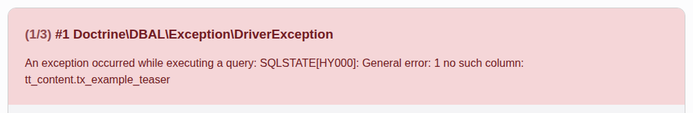
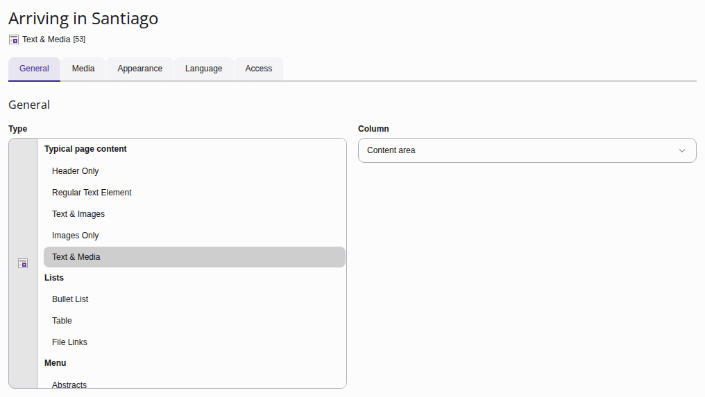
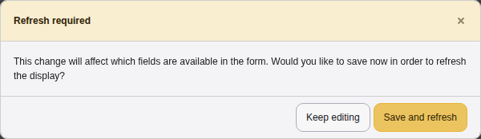

Editing content

On a page, click the pencil icon for the content element you want to edit, then edit the text and make other changes as required.
Table of contents:
Changing text and setting in a content element
Once you clicked on the edit button you can change text, images and all settings that you have permissions for. There might be additional settings that only an advanced editor or an administrator can see and edit. Those might be hidden to you.

Changed content is highlighted. The save button is found on the top
Content in the Content element forms is not auto-saved. If you try to leave a form that has changes you will be prompted to save:

You are prompted when you try to leave a form with unsaved changes
Warning
You are not prompted about unsaved changes if you close the browser window or use the browsers back button!
Troubleshooting content element edits
Content element has no edit button
If you have no permissions to change a content element, you will see that element in the overview but no edit, hide or delete button appears.

A content element that cannot be edited due to lacking permissions
Possible reasons:
- The content element may only be edited by a user or group that created it.
- Only admins may edit this content element.
- The content element is of a type that your group may not edit.
An administrator can support you in finding out why you cannot edit this content element.
Content element does not get saved
If one of the fields you edited contains an illegal value now or if you did not fill out a required field, you cannot save your changes.

A required field that has no value prevents saving of a content element

Input error caused by a letter entered in a number field
If the field you changed is on a different then the currently changed tab, you might not notice it right away.
Error message after saving a content element
Such error messages can happen if you are editing content during or right after an update. Note the time and exact error message and copy the URL from your browser where you saw the error. Send these to your integrator or programmer.

Such an error can happen during or after updates or when a programmer is working on your installation.
Changes not visible in the frontend after saving a content element
There can be various reasons:
- Your browser cached the old content: Delete your Browser cache.
- Try Previewing the page without clearing the cache.
- Your changes did not get saved due to an error (see possible errors above).
- Your site is using Workspaces.
- Try Manual cache clearing if you have the permissions to do so.
- If problems persist, contact your administrator.
Changing the type of an existing content element
You can also change the content element type by selecting another element from the Type list.

You can find the "Type" selector in tab General
When you change a content element's type, the TYPO3 backend wants to reload the screen to display different input fields, you are prompted first:

You can find the "Type" selector in tab General
This action does not delete content. It is saved in the background and will be restored if you select the applicable content element type again.
Tip
If you are more comfortable using shortcuts, there are different kinds of keyboard commands you can use in the backend forms.